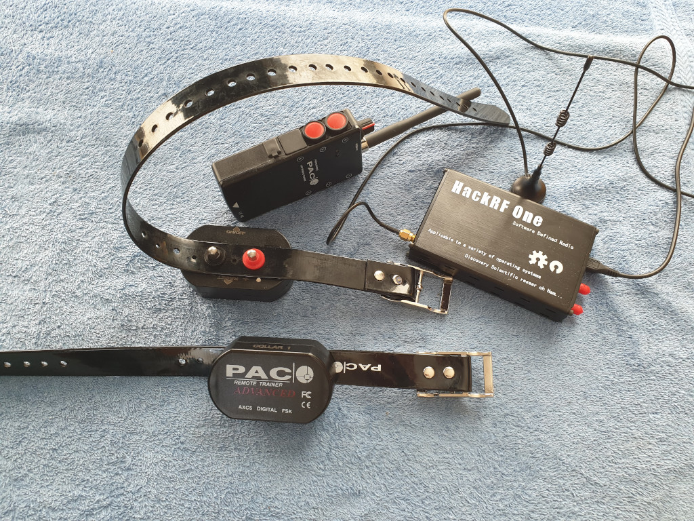

Receiver
PAC / Pacdog

Capabilities:
🔉
⚡ Frequency: 27 MHz
PAC have large contacts, therefore reducing the risk of skin damage. At low
power levels they are rather harmless, but they are unbearable on higher levels.
The minimum pulse duration is 250ms (it is 500ms for most other receivers).
The ACX and BCX collars as well as the ATX and DTX transmitters are compatible
to each other. No tests have been made with the NDTX and ETX transmitters and the ECX
receiver, yet. But it is likely that they use a different protocol.
Patpet T150

Capabilities:
🔉
📳 ⚡
Frequency: 915 MHz
This nameless collar operates on 915 MHz. The remote offers the power levels 0 to 5
for both vibration and shocks. The transmission protocol, however, uses values between
0 and 100. So a level 5 shock as shown on the display of the remote control
translates to a power level of 100 in the transmission message.
The collar has a button to turn the collar on, but it cannot be switched off again.
Although it goes into sleep mode after one minute, the battery is drained within days.
Petrainer

Capabilities:
🔉
📳 ⚡ Frequency: 433 MHz
Note: On this photo the contacts have been replaced with cap nuts.
There are at least two versions of this collar, which look almost identical:
One version has "PATENT NO. 200930186633.4" written onto it. This device creates a
very sharp pain even at level 1. I am worried, that it uses relatively high current
(not just high voltage) and is likely to cause skin burn.
There is no writing on the other version. But it has a green power LED on the
opposite side of the blinking red LED. The impulse feels very different.
Both versions use the exact same transmission protocol and the transmitters
are compatible. Further more, this collar is sold using different brand names,
but it is unclear which brand name uses which version.
Wodongdog

Capabilities:
🔉
📳 ⚡
💡 Frequency: 433 MHz
There are several versions of Wodondog style collars. Although they look very
similar from the outside, they are very different on the inside:
The version on the left has a bright white flashlight on the receiver
that can be activated by holding down the light button on the transmitter
for several seconds. The version on the right is missing this light.
Both versions use different transmission protocols on 433 MHz. They are incompatible.
Further more, there are reports on the Internet that there is a version
of this collar that operates on 915 MHz instead. There are also images that
show the Wodondog brand name printed on the transmitter.